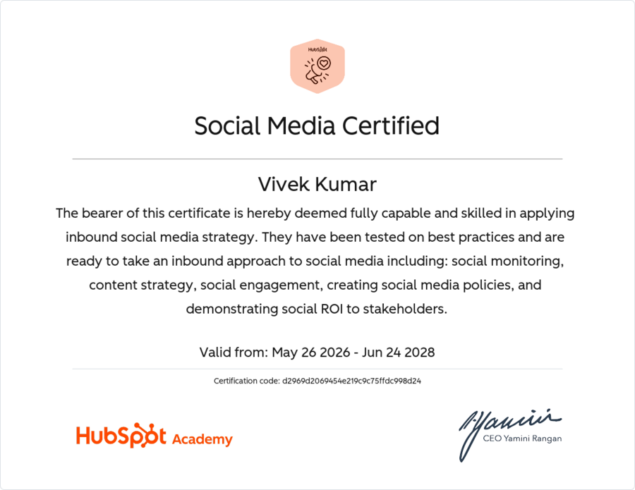
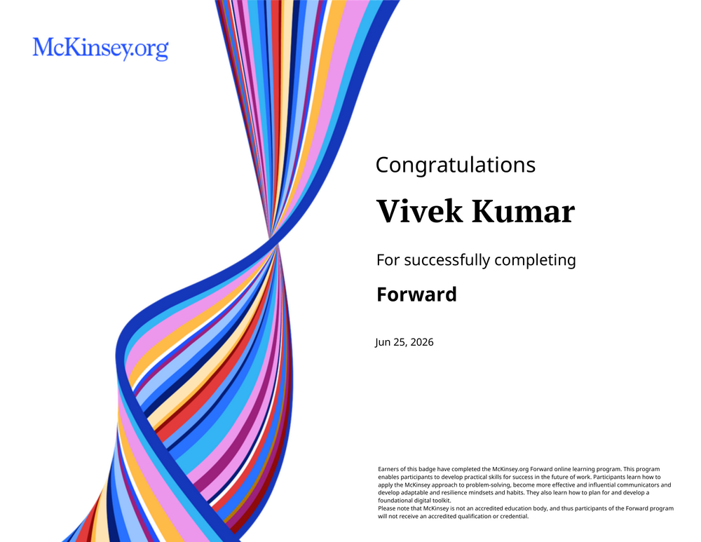
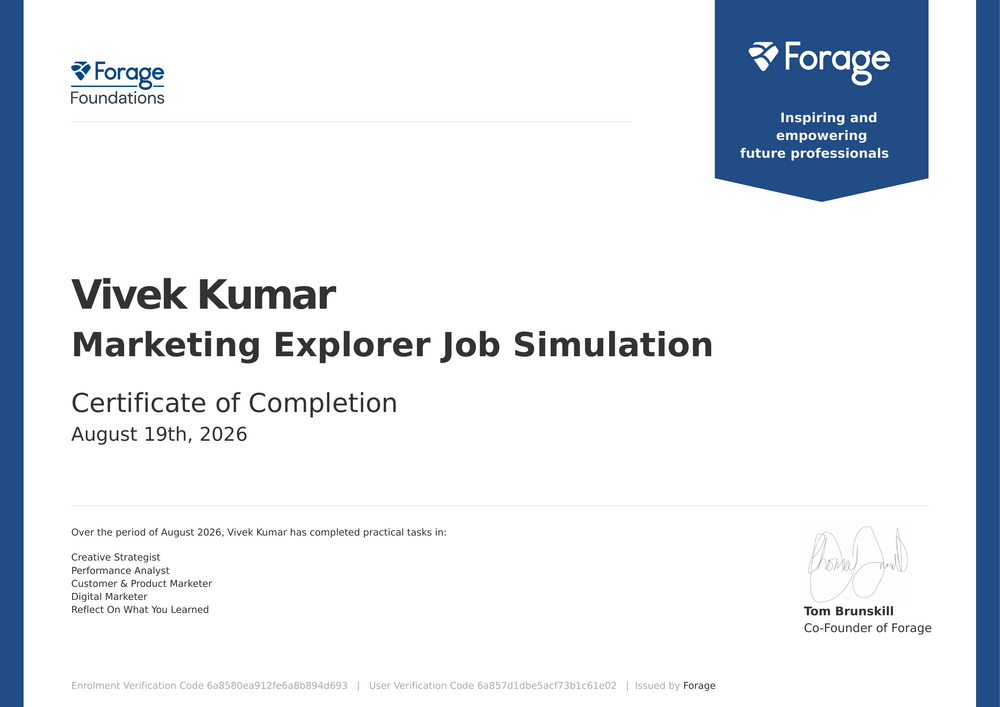

I translate performance data, audits, and customer research into marketing strategy that drives measurable outcomes. Currently seeking a graduate marketing role in the UK, with a focus on performance analysis, product marketing, and digital marketing.
I am an MSc Marketing student at Nottingham Business School, Nottingham Trent University, with a strong foundation in performance analysis, digital audits, and applied consumer research. My work typically begins with a diagnostic question — why has engagement declined, why is a service experience falling short — and results in a strategy or report a stakeholder can act on directly.
Prior to my MSc, I worked as a Marketing Support Intern at Tech Mahindra, analysing data and maintaining performance dashboards using Excel and SQL across global reporting cycles. Before entering marketing, I competed as a professional cricketer in India for five years, which developed the discipline, resilience, and composure under pressure that I bring to deadline-driven project work.
Campaign performance tracking, KPI reporting, Excel dashboards, SQL querying
STP, positioning, digital audits, campaign planning
Semrush, GTmetrix, PageSpeed Insights, SEO Site Checkup
Content strategy, social listening, Socialinsider, HubSpot
Qualitative research, thematic analysis, consumer insights
Excel, SQL, Canva, PowerPoint, HubSpot, Semrush
As Project Manager for a 5-person MSc consultancy team, I led research into Moyra UK's social media performance and website/customer journey, diagnosing why a smaller, more engaged brand was under-leveraging its position against larger competitors.
Moyra UK's Instagram engagement rate (2.58%) was 23× higher than Crystal Nails UK's (0.11%) — despite Crystal Nails having a larger following. The real opportunity wasn't reach, it was conversion.
Working in a 4-person team, I helped investigate why PizzaExpress was facing recurring complaints about service delays, food inconsistency, and staff behaviour, and what that meant for value perception and food waste.
Dissatisfaction wasn't driven by wait time alone — it was driven by uncommunicated wait time. Food quality inconsistency also linked directly to avoidable food waste, tying the commercial problem to UN SDG 12.



I am currently seeking graduate marketing roles across the UK, with particular interest in performance analysis, product marketing, and digital marketing.